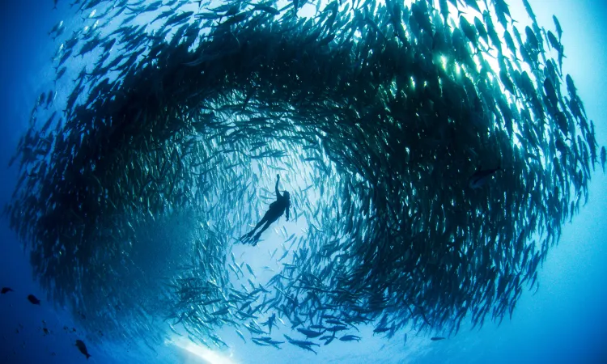

Many Scary Things about the Ocean
There are many scary things and facts about the ocean. The ocean is a vast and mysterious place, with many terrifying secrets beneath its surface. One of the scariest things about the ocean is the fact that it becomes very into the deep, where sunlight cannot reach making thalassophobia a valid fear. This reveals an eerie world of unknown creatures and pitch-black darkness. Strange and monstrous deep sea creatures, like the anglerfish with its bioluminescent lure or the giant squid lurking in the abyss, add to the ocean’s great mystery. Powerful and unpredictable forces, such as tsunamis, rogue waves, and whirlpools, can emerge without warning, swallowing ships and coastlines in their wake. Additionally, the ocean holds countless shipwrecks, ghost ships, and othe terrors reminding us of its merciless power. With over 80% of the ocean still unexplored, who knows what other horrors might be lurking in its depths?
